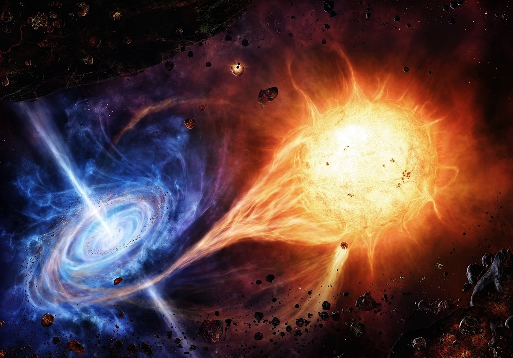

Неразрешённые проблемы физики чёрных дыр

-
Неизвестно доказательство принципа космической цензуры (сингулярности пространства-времени появляются в таких местах, которые, подобно внутренним областям чёрных дыр, скрыты от наблюдателей), а также точная формулировка условий, при которых он выполняется.
-
Неизвестно доказательство в общем случае «теоремы об отсутствии волос» (все чёрные дыры описываются решением гравитационных и электромагнитных уравнений Эйнштейна-Максвелла в ОТО и вполне могут характеризоваться только тремя внешне наблюдаемыми классическими параметрами: массой, электрическим зарядом и угловым моментом) у чёрной дыры.
-
Отсутствует полная и законченная теория магнитосферы чёрных дыр.
-
Неизвестна точная формула для вычисления числа различных состояний системы, коллапс которой приводит к возникновению чёрной дыры с заданными массой, моментом количества движения и зарядом.
-
Что остаётся после завершения процесса квантового распада чёрной дыры?